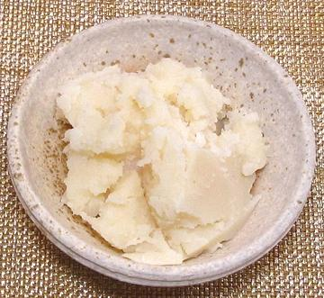

The recent enthusiasm for the Atkins Diet pretty much blew this out of the water - people on that diet failed to die, or even to show any of the symptoms claimed by the AHA. In fact, recent studies with rats (and demographics in China) show that saturated fats protect the heart from the ravages of canola oil (and other mustard seed oils).
The "healthy" trans fats and polyunsaturated fats the AHA urged us to use instead, are far and away more dangerous, to the point the FDA is considering banning trans fats outright. Polyunsaturated fats may be a major contributor to Type II diabetes, and their rapid rancidity is suspected to contribute to cancer - scandals in the making.
More on Cuts of Beef.

Not long ago all the fast food restaurants deep fried in beef tallow, a safe, high temperature (400°F/200°C) frying fat with good flavor and so durable a vat would only have to be replaced about once a month.
Then the AHA mobilized the Do-gooders against this "deadly animal fat", and a massive campaign was launched urging the fast food industry to stop using tallow in favor of "healthy" vegetable oils (actually highly processed seed oils not found in nature, like corn, soybean and canola oils).
The fast food industry decided they had to conform to this demand - so they studied the recommended vegetable oils. These were found totally unusable. These oils became rancid and stinky within just a few hours at frying temperatures. The fact that many products of rancidity are suspected carcinogens was probably not a consideration, but smell and taste certainly were - and the cost of replacing the fry oil every few hours, not once a month, was economically non-viable.
The fast food industry turned to the only option available at the time - deadly trans fats. These had the durability of beef tallow, but were approved by the Do-gooders and the AHA, because they were made by further processing of the already highly processed seed oils. The taste wasn't as good, so McDonalds (and probably others) turned to artificial beef flavors added to their fries to make them acceptable.
Now, they have to give up trans fats, which may soon be banned completely by the FDA. They cannot return to relatively safe, economical, good tasting beef tallow because the Do-gooders will scream in rage. The whole basis for the AHA's campaign has been shown entirely invalid, but the Do-gooders "know what's good for you" - it'll be at least another half century before the damage is undone.
So, the industry must turn to the only option left - an option not available when they went to trans fats - highly processed seed oils from GMO (Genetically Modified Organisms) seeds, which emulate the health characteristics of olive pomace oil (olive oil is too expensive for the fast food industry, and there is insufficient supply). This brings up a whole new realm of possible long term health problems.
Incidentally, in England, fish and chips are still fried in good old
beef tallow. Clearly, they are short of Do-gooders over there. We
should send them ours.